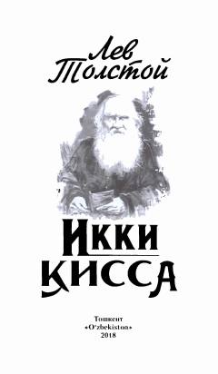

IQLev Tolstoyning inson hayoti va ma'naviy izlanishlar haqidagi ikki mashhur qissasi.
Ushbu kitob buyuk rus yozuvchisi Lev Tolstoyning «Ivon Ilyichning o'limi» va «Sergiy ota» qissalarini o'z ichiga oladi. Asarlar inson hayotining mazmuni, o'lim oldidagi anglashlar va ma'naviy poklanish mavzularini chuqur badiiy tahlil qiladi.